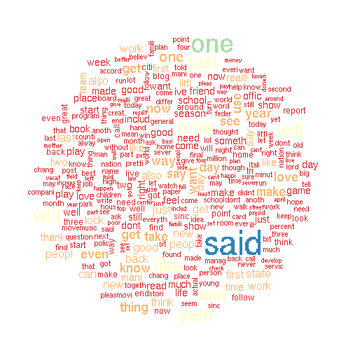
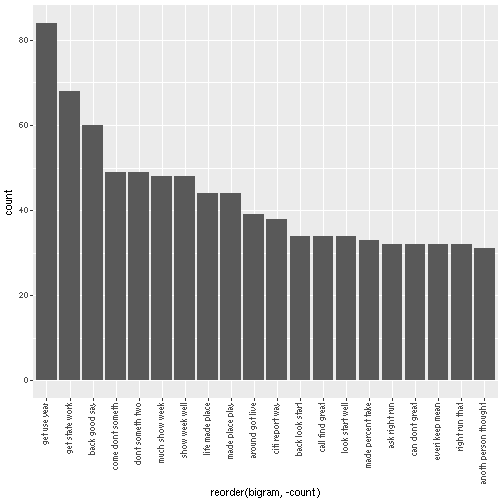
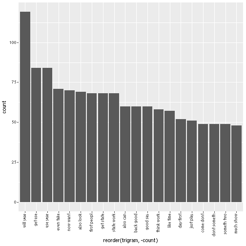

# Introduction

# Methods


```r
library(tm)
library(tidyverse)

readFile <-
    function(filepath, size=0) {
        conn <- file(filepath, "r")
        fulltext <- readLines(conn, encoding="ascii", skipNul = TRUE) # warning: skipNul is true here
        if (size > 0) fulltext <- fulltext %>% sample(size)
        close(conn)
        return(fulltext)
    }

set.seed(42)
n         <- 1001
us.Blogs   <- readFile("./data/Coursera-SwiftKey/final/en_US/en_US.blogs.txt", n) %>% as_tibble
us.Twitter <- readFile("./data/Coursera-SwiftKey/final/en_US/en_US.twitter.txt", n) %>% as_tibble
us.News    <- readFile("./data/Coursera-SwiftKey/final/en_US/en_US.news.txt", n) %>% as_tibble
```

cleaning twitter data


```r
removeTwitter <- function(input){
  input <- gsub("@\\w+","",input) # Removes twitter IDs
  input <- gsub("#\\w+","",input) # Removes twitter tags
  input <- gsub("[[:punct:]]{1,}","",input) # Removes punctuation
  input <- gsub("[0-9]+","",input) # Removes number strings
  return (input)
}

createCorpus <-
    function(fulltext) {
#        fulltext <- readFile(filepath)

        vs <- tm::VectorSource(fulltext)
        Corpus(vs, readerControl=list(readPlain, language="en", load=TRUE))
    }

us.Blogs.Corpus   <- removeTwitter(us.Blogs) %>% createCorpus
us.Twitter.Corpus <- removeTwitter(us.Twitter) %>% createCorpus
us.News.Corpus    <- removeTwitter(us.News) %>% createCorpus
```

cleaning all data.


```r
profanity <- readFile("./data/bad-words.txt")

cleanCorpus <- function (inputCorpus) {
  inputCorpus <- tm_map(inputCorpus, content_transformer(tolower)) # upper to lower
  inputCorpus <- tm_map(inputCorpus, content_transformer(removePunctuation)) # rm punct. as seen by tm
  inputCorpus <- tm_map(inputCorpus, content_transformer(removeNumbers)) # rm numbers

  # remove profanity and stopwords
  inputCorpus <- tm_map(inputCorpus, removeWords, c(stopwords("english"), profanity))
  inputCorpus <- tm_map(inputCorpus, content_transformer(stemDocument)) # get stem words e.g. rm -ing
  inputCorpus <- tm_map(inputCorpus, content_transformer(stripWhitespace)) # remove empty spaces
  return (inputCorpus)
}

us.Blogs.Corpus.Clean    <- cleanCorpus(us.Blogs.Corpus)
us.Blogs.Corpus.Matrix   <- us.Blogs.Corpus.Clean   %>% DocumentTermMatrix
us.Twitter.Corpus.Clean  <- cleanCorpus(us.Twitter.Corpus)
us.Twitter.Corpus.Matrix <- us.Twitter.Corpus.Clean %>% DocumentTermMatrix
us.News.Corpus.Clean     <- cleanCorpus(us.News.Corpus)
us.News.Corpus.Matrix    <- us.News.Corpus.Clean    %>% DocumentTermMatrix

us.Data.Corpus <- c(us.Blogs.Corpus.Clean, us.Twitter.Corpus.Clean, us.News.Corpus.Clean) %>% createCorpus
```

## Identify ngrams


```r
## library(RWeka)

## biGramTokenizer <- function(x){ NGramTokenizer(x,Weka_control(min=2,max=2)) }
## testngram <- DocumentTermMatrix(us.Blogs.Corpus.Matrix,control=list(tokenize = biGramTokenizer))

## inspect(testngram[,1:10])

library(tidytext)

## us.Data.Corpus %>% matrix
## data.frame(text=unlist(sapply(us.Blogs, `[`, "content")), stringsAsFactors=FALSE)
us.Data.Tidy     <- us.Data.Corpus %>% DocumentTermMatrix %>% tidy
us.Data.Bigrams  <- us.Data.Tidy %>% unnest_tokens(bigram, term, token = "ngrams", n = 3)
us.Data.Trigrams <- us.Data.Tidy %>% unnest_tokens(trigram, term, token = "ngrams", n = 2)
us.Data.Monograms <- us.Data.Tidy %>% unnest_tokens(word, term, token = "ngrams", n = 1) %>% select(count, word)
```


# Analysis

## Some words are more frequent than others - what are the distributions of word frequencies?


```r
library(wordcloud)
library(RColorBrewer)

us.Data.Monograms %>%
    with(wordcloud(word, count, min.freq = 20,
               colors = brewer.pal(5, 'Spectral')))
```



## What are the frequencies of 2-grams and 3-grams in the dataset?


```r
sorted.Bigram <- us.Data.Bigrams[which(!is.na(us.Data.Bigrams$bigram)), ]  %>%
    arrange(desc(count))

ggplot(data = sorted.Bigram[1:20,]) +
    geom_bar(aes(x = reorder(bigram, -count), y = count), stat="identity") +
    theme(axis.text.x = element_text(angle = 90, vjust = 0.5, hjust=1))
```




```r
sorted.Trigram <- us.Data.Trigrams[which(!is.na(us.Data.Trigrams$trigram)), ]  %>%
    arrange(desc(count))

ggplot(data = sorted.Trigram[1:20,]) +
    geom_bar(aes(x = reorder(trigram, -count), y = count), stat="identity") +
    theme(axis.text.x = element_text(angle = 90, vjust = 0.5, hjust=1))
```




## How many unique words do you need in a frequency sorted dictionary to cover 50% of all word instances in the language? 90%?

unsure how to do.

## How do you evaluate how many of the words come from foreign languages?

Compare words against a dictionary, like the en_US dictionary.

## Can you think of a way to increase the coverage -- identifying words that may not be in the corpora or using a smaller number of words in the dictionary to cover the same number of phrases?

Studying the authors writing style like they do in ml for shakespeare
